A real-valued functional
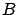
on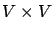
is called bilinear if it is linear in each argument (when the other one is fixed). Setting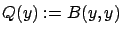
we then obtain a quadratic functional, or quadratic form, onA quadratic form
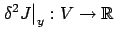
is called the second variation of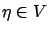
and all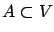
, then for all admissible perturbations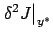
must be positive semidefinite on the space of admissible perturbations. For local maxima, the inequality in (1.40) is reversed. Of course, the usefulness of the condition will depend on our ability to compute the second variation of the functionals that we will want to study.
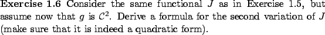
What about a second-order sufficient condition for optimality? By analogy with the second-order sufficient condition (1.16) which we derived for the finite-dimensional case, we may guess that we need to combine the first-order necessary condition (1.37) with the strict-inequality counterpart of the second-order necessary condition (1.40), i.e.,
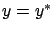
the second-order term in (1.39) dominates the higher-order term
We know that there exists an
 such that
for all nonzero
such that
for all nonzero  with
with
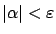
we have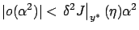
. Using this inequality and (1.37), we obtain from (1.39) that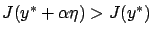
. Note that this does not yet prove that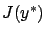
is the lowest value ofOne way to resolve the above difficulty would be as follows. The first step is to strengthen the condition (1.41) to
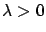
. The property (1.42) does not automatically follow from (1.41), again because we are in an infinite-dimensional space. (Quadratic forms satisfying (1.42) are sometimes called uniformly positive definite.) The second step is to modify the definitions of the first and second variations by explicitly requiring that the higher-order terms decay uniformly with respect to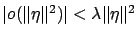
when
With our current definitions of the first
and second variations in terms of (1.33)
and (1.39), we do not
have
a general second-order sufficient condition for optimality. However, in
variational problems that we are going to study,
the functional
 to be minimized will take a specific form. This additional structure
will allow us to derive conditions under which second-order terms dominate
higher-order terms, resulting in optimality. The above discussion
was given mainly for illustrative purposes, and will not
be directly used in the sequel.
to be minimized will take a specific form. This additional structure
will allow us to derive conditions under which second-order terms dominate
higher-order terms, resulting in optimality. The above discussion
was given mainly for illustrative purposes, and will not
be directly used in the sequel.